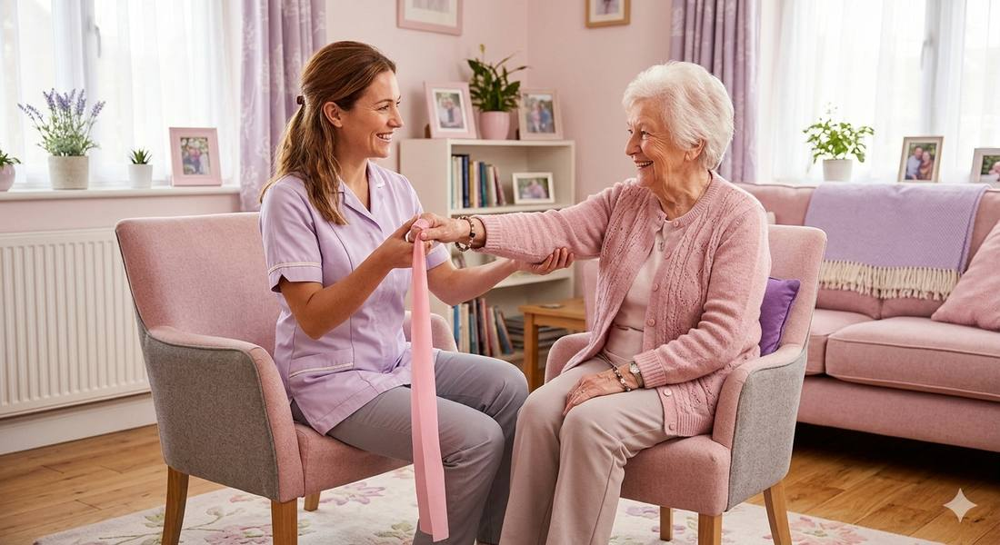
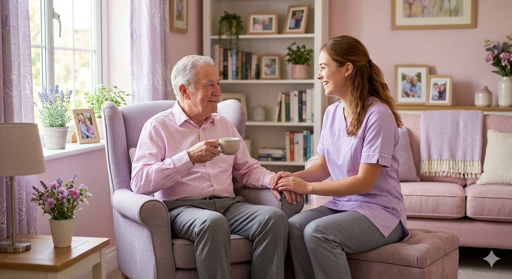
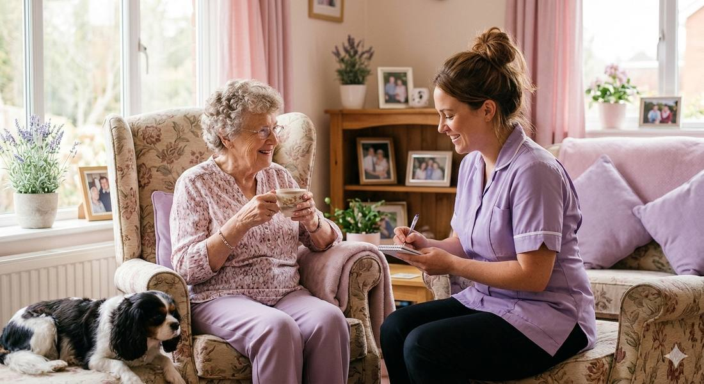

6horas
Plantão parcial
Para quem precisa de apoio em um período do dia, como manhã ou tarde, ou de um intervalo para a família descansar.
Pedir propostaA Acolher Care leva enfermagem e companhia para dentro da casa do seu familiar idoso. Uma equipe treinada para cuidar com técnica, paciência e afeto, e manter a família sempre por dentro.
Cada plano é montado depois de conhecer o paciente, a casa e a família. Nada de pacote pronto.

Exercícios leves, estímulo à caminhada e apoio nas atividades do dia a dia ajudam o idoso a manter a independência por mais tempo, com segurança.

Uma conversa, um chá, uma memória compartilhada. A solidão pesa na saúde, e nossa equipe está presente de verdade, com atenção e escuta.

Tudo o que acontece durante o plantão é registrado: alimentação, humor, medicação e intercorrências. Você recebe o resumo e fica tranquilo, mesmo à distância.
Um caminho simples, sem burocracia, para você resolver com calma.
Por WhatsApp ou formulário, em poucas linhas. Respondemos no mesmo dia.
Nossa enfermeira conhece o paciente e a casa e entende a rotina da família.
Definimos juntos a equipe, os horários e os cuidados de cada dia.
A equipe começa o plantão e a enfermeira supervisiona de perto.
Os valores dependem do perfil do paciente e da equipe necessária. Enviamos a proposta depois da avaliação.
Para quem precisa de apoio em um período do dia, como manhã ou tarde, ou de um intervalo para a família descansar.
Pedir propostaCuidado contínuo durante o dia ou a noite, com medicação, higiene, refeições e companhia.
Pedir propostaPresença o dia todo, com revezamento de profissionais, para casos que exigem atenção constante.
Pedir propostaTambém é possível montar escalas por dias da semana ou combinar períodos diferentes.
Não achou a sua? Escreva para nós e respondemos com calma.
Trabalhamos com técnicos de enfermagem e cuidadores selecionados por formação, experiência e perfil acolhedor. Uma enfermeira supervisiona o plano de cada paciente.
Não. A visita de avaliação é gratuita e sem compromisso. É nela que definimos o plano e a equipe ideais.
Ao fim de cada plantão, a equipe registra alimentação, humor, medicação e qualquer intercorrência, e a família recebe o relatório.
Sim. A necessidade do idoso muda e o plano acompanha: dá para ajustar horários, dias e tipo de cuidado quando for preciso.
Fale com a gente pelo WhatsApp. Sempre que possível, organizamos o início do atendimento rapidamente. Em emergências médicas, ligue para o SAMU (192).
Conte um pouco da situação e nossa enfermeira retorna ainda hoje, sem compromisso.